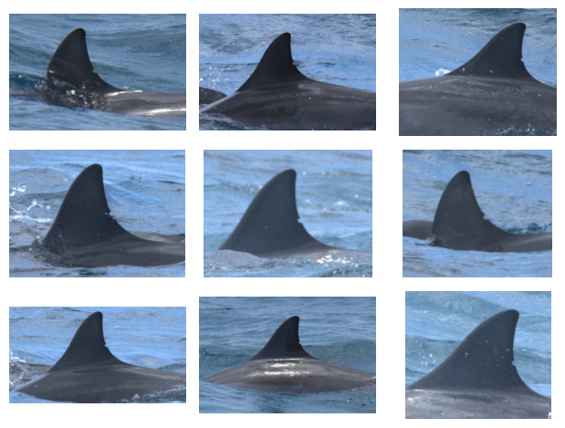

import pyseter
pyseter.verify_pytorch()✓ PyTorch 2.7.1+cu126 detected
✓ CUDA GPU available: NVIDIA RTX A4000Pyseter is an Python package for sorting images by an automatically generated ID. The main functions of Pyseter are:
This notebook will walk you through each major function. First, let’s make sure that Pyseter is properly installed, and that it can access Pytorch.
import pyseter
pyseter.verify_pytorch()✓ PyTorch 2.7.1+cu126 detected
✓ CUDA GPU available: NVIDIA RTX A4000If you’re on a Mac, you should see something like
✓ PyTorch 2.7.0 detected
✓ Apple Silicon (MPS) GPU availablePlease note, however, that AnyDorsal consumes quite a bit of memory. As such, only Apple Silicon devices with 16 GB or more of memory will work. Ideally, future versions of Pyseter will use a smaller model.
If neither Apple Silicon or an NVIDIA GPU are available, you will see a message like this.
✓ PyTorch 2.7.1+cu126 detected
! No GPU acceleration available. Expect slow feature extraction.Packages in Python tend to be subdivided into modules based on their functions. In Pyseter, the sort module contains functions for sorting files, including other forms of file management.
In R, the above code block would look something like
library(pyseter)
verify_pytorch()or,
pyseter::verify_pytorch()Imports work a little differently in Python. First, we need tell Python that this package is available for imports, import pyseter, then we need to explicitly call the function from the library pyseter.verify_pytorch(). To an R user, this can feel overly wordy. Nevertheless, this wordiness helps keep the global environment clean. Whereas R sessions frequently have to deal with masking names, this rarely happens in Python.
The main purpose of Pyseter is organizing images into folders. To do keep things clean and tidy, we recommend establishing a working directory with a subfolder, e.g., called, all images, that contains every image you want to be sorted (see below for a different case). Optionally, you might want to have a .csv with encounter information in the working directory. This .csv would contain two columns: one for the image name, i.e., every image in all images, and another for the encounter. As such, the working directory would look like this.
working directory
├── encounter_info.csv
├── all images
│ └──00cef32dc62b0f.jpg
│ └──3ecc025ea6f9bf.jpg
│ └──9f18762a48696b.jpg
│ └──36f78517a512dd.jpg
│ └──470d524b4d5303.jpg
...
│ └──4511c9e5cb7acb.jpgSometimes, you might have your images organized into subfolders by encounter.
working_dir
└── original_images
├── SL_HI_006_20220616 (CROPPED)
│ ├── 2022-06-16_CLD500_CL_006.JPG
│ ├── 2022-06-16_CLD500_CL_007.JPG
│ ├── 2022-06-16_CLD500_CL_008.JPG
│ ├── 2022-06-16_CLD500_CL_021.JPG
│ ├── 2022-06-16_CLD500_CL_042.JPG
...
├── SL_HI_007_20220616 (CROPPED)
│ ├── 2022-06-16_CLD500_CL_346.JPG
│ ├── 2022-06-16_CLD500_CL_347.JPG
│ ├── 2022-06-16_CLD500_CL_371.JPG
│ ├── 2022-06-16_CLD500_CL_372.JPGIn this case, you might want to accomplish two tasks: move all these images to one folder, e.g., all_images, and create a .csv that indicates which image belongs to which encounter (i.e., a map from image to encounter). The prep_images() function does just that.
from pyseter.sort import prep_images
# various directories we'll be working with
working_dir = '/home/pattonp/koa_scratch/id_data/working_dir'
original_image_dir = working_dir + '/original_images'
# new directory containing every image
image_dir = working_dir + '/all_images'
# copy images to a single folder, then
prep_images(original_image_dir, all_image_dir=image_dir)Copied 1230 images to: /home/pattonp/koa_scratch/id_data/working_dir/all_images
Saved encounter information to: /home/pattonp/koa_scratch/id_data/working_dir/encounter_info.csvIn python, you can concatenate strings with the + operator. This is equivalent to paste0(working_dir, '/original_images') in R.
Packages in Python tend to be subdivided into modules based on their functions. In Pyseter, the sort module contains functions for sorting files, including other forms of file management.
Pyseter identifies individuals by extracting feature vectors from images. Feature vectors summarize three-dimensional images into one-dimensional vectors that are useful for the task at hand, in this case, individual identification.
Pyseter extracts feature vectors with AnyDorsal, an algorithm for identifying whales and dolphins of many species. AnyDorsal is the same dorsal identification algorithm that’s included with Happywhale (although not to be confused with their humpback whale fluke ID algorithm).
Before we extract the feature vectors, let’s first create a subfolder within our working directory to save them in. This isn’t necessary, yet keeps things tidy.
import os
# in case you want to save the features after extracting them
feature_dir = working_dir + '/features'
os.makedirs(feature_dir, exist_ok=True)The module, os, is part of Python’s standard library. People often refer to R and its standard libraries as “base R.” Base R includes the stats library, which provides the function rnorm. The os module has many functions for tinkering with your operating system.
We will extract features with the FeatureExtractor class. To do so, we first need to initialize the class. This sets up important parameters, such as the batch_size, which is the number of images that will be processed in parallel. Larger batches should run faster, although your mileage may vary. If you specify too large of a batch, you may encounter an OutOfMemoryError (see below for an example). If you encounter this error, try specifying a larger batch size. If you encounter this error with a very small batch size (say, 2), you may need to resize your images. You can do this manually by reducing the file size in an image editing software, or with Python
OutOfMemoryError: CUDA out of memory. Tried to allocate 12.00 MiB. GPU 0 has a total capacity of 5.81 GiB of which 9.06 MiB is free. Including non-PyTorch memory, this process has 5.76 GiB memory in use. Of the allocated memory 5.64 GiB is allocated by PyTorch, and 50.21 MiB is reserved by PyTorch but unallocated. If reserved but unallocated memory is large try setting PYTORCH_CUDA_ALLOC_CONF=expandable_segments:True to avoid fragmentation. See documentation for Memory Management (https://pytorch.org/docs/stable/notes/cuda.html#environment-variables)
Python error messages are comically long, putting CVS receipts to shame. This is because they show the entire traceback, i.e., this error caused this error caused this error, etc. To quickly diagnose the problem, scroll to the bottom of the message. Then, you can further dissect it by scrolling up.
from pyseter.extract import FeatureExtractor
# specify the configuration for the extractor
fe = FeatureExtractor(batch_size=4,)Using device: cuda (NVIDIA RTX A4000)Once we’ve initialize the class, we can use its associated methods (functions). In this case, the only one we are interested in is extract(), which extracts a feature vector for every image in a specified directory. This can take several minutes, so we typically save the results afterwards.
Classes and methods also exist in R, but operate more behind the scenes. For example, x <- data.frame() initializes an object of class data.frame, and summary(x) calls the summary method for data.frames. Python makes this relationship more explicit. For example, the equivalent (although nonsensical) Python code would be x = data.frame() and x.summary().
import numpy as np
# extract the features for the input directory then save them
features = fe.extract(image_dir=image_dir)
# this saves them as an numpy array
out_path = feature_dir + '/features.npy'
np.save(out_path, features)Loading model.../home/pattonp/.conda/envs/pyseter/lib/python3.13/site-packages/timm/models/_factory.py:138: UserWarning: Mapping deprecated model name tf_efficientnet_l2_ns to current tf_efficientnet_l2.ns_jft_in1k.
model = create_fn(Warning: Missing keys when loading pretrained weights: ['head.weight']
Warning: Unexpected keys when loading pretrained weights: ['head.fc.weight']
Extracting features...100%|██████████| 308/308 [01:48<00:00, 2.84it/s]The object features is a dictionary, whose keys are the filenames and whose values are the feature vectors associated with each filename. This helps ensure that each image is associated with the correct feature vector. Nevertheless, it can be easier to work with actual numpy arrays. To do so, convert the keys to a list, then to a numpy array.
filenames = np.array(list(features.keys()))
feature_array = np.array(list(features.values()))The R objects that Python’s dictionary most resemble is the named vector or the list. Like a list, dictionaries can hold different data types. Unlike a list, dictionaries have no order, and therefore cannot be integer indexed.
If you’ve already extracted and saved features, you can load them with the code below.
# import numpy as np
# out_path = feature_dir + '/features.npy'
# features = np.load(out_path, allow_pickle=True).item()
# filenames = np.array(list(features.keys()))
# feature_array = np.array(list(features.values()))Pyseter comes with two algorithm’s for clustering images by proposed ID. Network clustering works better for small datasets. To use network clustering, we first need to compute the similarity scores between each pair of images.
from sklearn.metrics.pairwise import cosine_similarity
similarity_scores = cosine_similarity(feature_array)This indicates how similar the individuals in each image are.
Next, we can perform the clustering. Each cluster represents a proposed ID. To access the “cluster labels” (these are just integers representing the cluster), we can access the cluster_idx attribute, i.e, results.cluster_idx.
from pyseter.sort import NetworkCluster, report_cluster_results
nc = NetworkCluster(match_threshold=0.55)
results = nc.cluster_images(similarity_scores)Following clusters may contain false positives:
['ID_0013', 'ID_0040', 'ID_0061', 'ID_0079', 'ID_0086', 'ID_0110']Network clustering has one major hyperparameter, namely, the match_threshold, which indicates whether two images should be grouped within a cluster. That is, if the similarity score between two images is above a certain threshold, we cluster them into a proposed ID. High thresholds mean that few images will be clustered together, creating many clusters. Very low thresholds mean that many images will be clustered together, creating few clusters. report_cluster_results produces a quick and dirty summary of the number of clusters created, and the size of the largest cluster (i.e., the number of images associated to the most photographed individual). This is a quick sanity check.
network_idx = results.cluster_idx
report_cluster_results(network_idx)Found 245 clusters.
Largest cluster has 30 images.You’ll also note that nc.cluster_images() warns that some clusters may contain “false positives.” False positive matches occur when two separate individuals fall under the same proposed ID. We can diagnose possible false positives by evaluating the network. In this case, the network consists of nodes (images) and edges, which represent connections between images. Two images are connected when they have a similarity score above the threshold. A blob of connected nodes (i.e., connected components) represents a proposed ID.
Sometimes, the connected components look less like a blob and more like a barbell, where two sets of images have many connections amongst each other, yet these two blobs are only connected by one link. We suspect that such clusters contain false positives, i.e., two sets of images for two individuals connected by one spurious link. We can plot the networks of the suspicious clusters with results.plot_suspicious().
results.plot_suspicious()
ID_0033 clearly has a barbell shape, suggesting that this cluster consists of images for two individuals linked together by one spurious connection.ID_0013 also seems dubious, and ID_0060 might consist of four separate individuals.
Users can deal with suspicious clusters in several ways. First, raising the match threshold should reduce the number of false positive matches. That said, this will increase the false negative rate, whereby images of one individual are spread across multiple proposed IDs. Alternatively, users can manually inspect the images within the clusters and, if need be, divide up the images.
As the number of images being clustered grows, the overall false positive rate also grows (this is analogous the multiple comparison problem in statistics). At some point,the network matching becomes untenable; all but the highest match thresholds would produce too many false positives to be useful.
For these cases, there is HierarchicalCluster, which relies on the Hierarchical Agglomerative Clustering algorithm provided by the popular machine learning package, scikit-learn. Note that HierarchicalCluster will run noticeably slower than the NetworkCluster.
from pyseter.sort import HierarchicalCluster, format_ids
# initialize the object then cluster away!
hc = HierarchicalCluster(match_threshold=0.5)
hac_idx = hc.cluster_images(feature_array)The HierarchicalCluster results object is much simpler, in that it just returns the cluster indices for each image. We can make these labels a little prettier with the format_ids function.
hac_labels = format_ids(hac_idx)
print(hac_labels[:5])
# quick summary of the clustering results
report_cluster_results(hac_labels)['ID-0092', 'ID-0159', 'ID-0075', 'ID-0000', 'ID-0034']
Found 306 clusters.
Largest cluster has 19 images.HierarchicalCluster is useful for large datasets, yet will be more prone to false negative errors. In this example, it found 60 more clusters (proposed IDs) than the network matching, which may be dubious. Users will have to decide for themselves how to balance false positive versus false negative matches. For example, we recommend that users preprocess their images with Pyseter, then identify animals in the pre-processed images manually or with Happywhale. This second round of identification should help clean up false negative matches. As such, users following this approach might be more averse to false positive errors in the first stage.
Once we’ve identified individuals, we can sort them into folder by proposed ID and encounter. To do so, we need to create a pandas DataFrame that indicates the proposed ID and encounter for each filename. Recall that we created the encounter_info.csv with the prep_images() function above. For this sort, we’ll use the NetworkCluster results
import pandas as pd
# create a dataframe proposed id and encounter for each image
network_df = pd.DataFrame({'image': filenames, 'proposed_id': network_idx})
encounter_info = pd.read_csv(working_dir + '/encounter_info.csv')
network_df = network_df.merge(encounter_info)
network_df.head()| image | proposed_id | encounter | |
|---|---|---|---|
| 0 | 2022-06-25_CLD500_CL_735.jpg | ID-0000 | SL_HI_016_20220625 (CROPPED) |
| 1 | 2021-11-17_Hilo_AP_2_UNK_0330.jpg | ID-0001 | SL_Hilo_13_20211117 (CROPPED) |
| 2 | 2022-06-20_CLD500_CL_1166.jpg | ID-0002 | SL_HI_010_20220620 (CROPPED) |
| 3 | 2022-06-16_D750_ANNM_062.JPG | ID-0003 | SL_HI_006_20220616 (CROPPED) |
| 4 | 2022-06-20_CLD500_CL_453.jpg | ID-0004 | SL_HI_010_20220620 (CROPPED) |
The ID DataFrame must have columns named image, proposed_id, and encounter. Otherwise sort_images will not work. Luckily, changing column names in pandas is straightforward.
network_df.columns = ['image', 'proposed_id', 'encounter']Pandas is a package for managing dataframes, and is a straight knock-off of R’s data.frame. In my experience, most R users lose patience not with Python, but with pandas. Pandas is just similar enough to R that one should be able to directly port R ideas over. However, key differences between pandas and R prevent this, causing immense frustration (especially for yours truly!)
To sort the images, we need to specify an output directory, then run the sort_images function.
from pyseter.sort import sort_images
# make an output directory
sorted_dir = working_dir + '/sorted_images'
os.makedirs(sorted_dir, exist_ok=True)
# sort the images into folders based on proposed id
sort_images(network_df, all_image_dir=image_dir, output_dir=sorted_dir)Sorted 1230 images into 335 folders.We can check to see that this worked by plotting a grid of images with matplotlib.
import matplotlib.pyplot as plt
from PIL import Image
# get the files associated with the first ID
first_id_dir = sorted_dir + '/ID-0000'
this_encounter = os.listdir(first_id_dir)[0]
encounter_dir = first_id_dir + '/' + this_encounter
encounter_files = os.listdir(encounter_dir)
# plot a grid of images
fig, axes = plt.subplots(3, 3, tight_layout=True)
for i, filename in enumerate(encounter_files[:9]):
path = encounter_dir + '/' + filename
image = Image.open(path)
axes.flat[i].imshow(image)
axes.flat[i].axis('off')